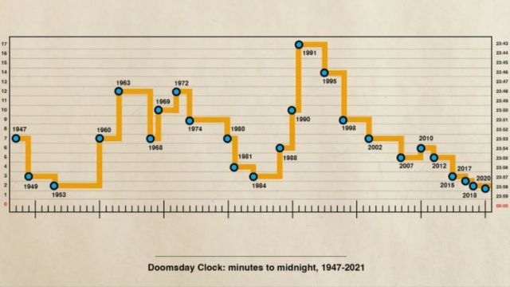

¿Que pasaria si todo lo malo que a pasado en el mundo a traves de la historia se comprimiera en un solo año?
Esta pregunta se la hizo unos cientificos en la decada de los 40 y a raiz de esto se creo el proyecto "Reloj del juicio final a travez de la asociacion Bulletin of the atomic Scientists.
Poner a funcionar el reloj.
En 1939 Albert Einstein y Leo Szilard enviaron un mensaje al presidente de Estados Unidos, en esta carta hablaban sobre la tecnologia nuclear.
Años despues en conjunto a colaboraciones con cientificos, militares y la industria, el proyecto Manhattan se dio a conocer.
¿Como leer el reloj?
Este reloj es metaforico, por lo cual no significa que queden 100 segundos para el fin del mundo. Cuando el reloj llegue a la media noche significara que existira una catastrofe nuclear o un cambio climatico catastrofico.

El reloj a lo largo de los años
Como se muestrea en la imagen anterior, podemos visualizar que en los ultimos 75 años hemos tenido varias crisis, sean hambientales o politicas. Por ejemplo en 1947 con la creacion de la bomba atomica o en el 2020 por el Coronavirus COVID-SARS
El reloj... ¿Nos dice cuanto nos queda en este mundo?
Como hablamos en "¿Como leer el reloj?" no nos establece el tiempo que queda de vida en la tierra. Desde mi punto de vista veo que es una forma de motivacion por la asociacion Bulletin of the atomic Scientis para quitar las brechas politicas que existen hoy en dia y dividen a la poblacion, la cual queda cegada por las deciciones politicas de unas pocas personas.